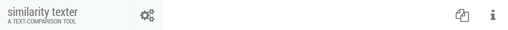
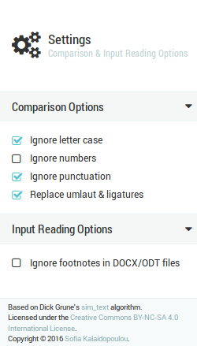
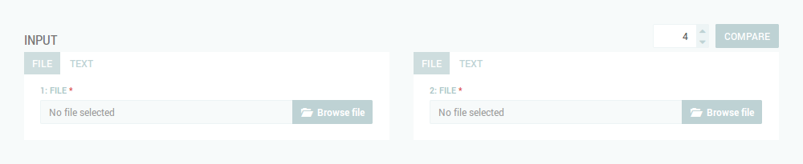
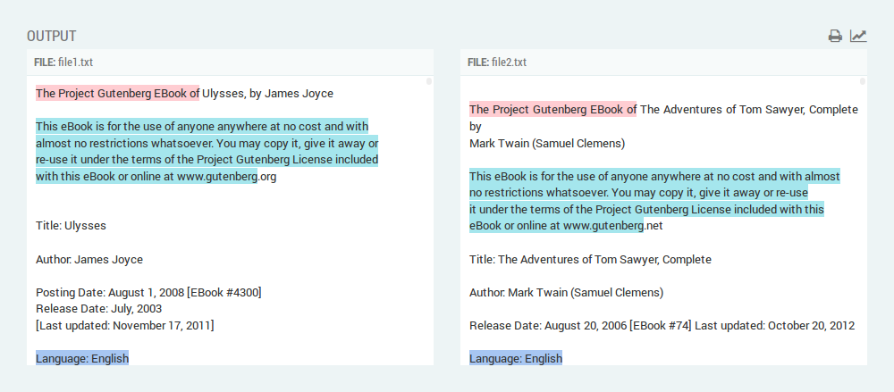
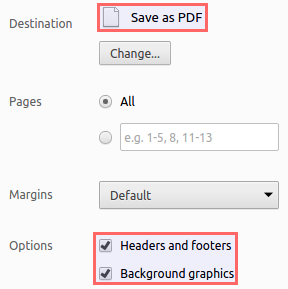

Documentation
Overview
similarity texter is a web application that measures, and reports lexical similarities, which are unique (no duplicates), between two input files or texts. Its implementation is based on the sim_text algorithm, developed by Dick Grune.
Featured functionalities
- Supports different types of input: DOCX, ODT, TXT files, and HTML/plain text.
- Provides options for fine-tuning the reading of files, and the comparison process.
- Supports auto-scrolling to a target match, when clicking on a source match.
- Generates a PDF report from the comparison output.
Supported web browsers
The web application has been tested on Google Chrome (v48.0), Mozilla Firefox (v44.0), and Internet Explorer (v11.0).
Proper functionality on previous versions and/or other web browsers than those specified cannot be guaranteed.
How to use
The use of this web tool can be summarized in the following steps:
- From the Settings panel, select the options of your choice.
- From the Input panel, set the value of the Minimum match length, and provide two input files or texts.
Start the comparison process by clicking on the COMPARE button. - Examine the results, displayed in the Output panel.
- Generate a PDF report by clicking on the button in the Output panel.
Graphical User Interface
Navigation bar
This panel contains a set of buttons, which show/hide different parts of the GUI.

- The button toggles the Settings panel.
- The button toggles the Input panel.
- The button opens the documentation page of similarity texter in a new tab.
Settings panel
This panel provides a set of options related to the reading of files, and the comparison process.
When you select/change an option, its new value is saved in your web browser's local storage.
So, you don't have to set it once more, if you refresh the page or restart your web browser.

Comparison options
These options determine the way in which comparison is performed.
-
Ignore letter case
When checked, the letter case of the input is not taken into account during comparison, i.e. all input is converted to lowercase. -
Ignore numbers
When checked, numbers are not taken into account during comparison, i.e. they are deleted from input. -
Ignore punctuation
When checked, the following punctuation characters/symbols are not taken into account during comparison, i.e. they are deleted from input.\x21-\x23\x25-\\x2A\x2C-\x2F\x3A\x3B\\x3F\x40\\x5B-\\x5D\x5F\\x7B\x7D\xA1\xA7\xAB\xB6\xB7\xBB\xBF\u037E\u0387\u055A-\u055F\u0589\u058A\u05BE\u05C0\u05C3\u05C6\u05F3\u05F4\u0609\u060A\u060C\u060D\u061B\u061E\u061F\u066A-\u066D\u06D4\u0700-\u070D\u07F7-\u07F9\u0830-\u083E\u085E\u0964\u0965\u0970\u0AF0\u0DF4\u0E4F\u0E5A\u0E5B\u0F04-\u0F12\u0F14\u0F3A-\u0F3D\u0F85\u0FD0-\u0FD4\u0FD9\u0FDA\u104A-\u104F\u10FB\u1360-\u1368\u1400\u166D\u166E\u169B\u169C\u16EB-\u16ED\u1735\u1736\u17D4-\u17D6\u17D8-\u17DA\u1800-\u180A\u1944\u1945\u1A1E\u1A1F\u1AA0-\u1AA6\u1AA8-\u1AAD\u1B5A-\u1B60\u1BFC-\u1BFF\u1C3B-\u1C3F\u1C7E\u1C7F\u1CC0-\u1CC7\u1CD3\u2010-\u2027\u2030-\u2043\u2045-\u2051\u2053-\u205E\u207D\u207E\u208D\u208E\u2308-\u230B\u2329\u232A\u2768-\u2775\u27C5\u27C6\u27E6-\u27EF\u2983-\u2998\u29D8-\u29DB\u29FC\u29FD\u2CF9-\u2CFC\u2CFE\u2CFF\u2D70\u2E00-\u2E2E\u2E30-\u2E42\u3001-\u3003\u3008-\u3011\u3014-\u301F\u3030\u303D\u30A0\u30FB\uA4FE\uA4FF\uA60D-\uA60F\uA673\uA67E\uA6F2-\uA6F7\uA874-\uA877\uA8CE\uA8CF\uA8F8-\uA8FA\uA8FC\uA92E\uA92F\uA95F\uA9C1-\uA9CD\uA9DE\uA9DF\uAA5C-\uAA5F\uAADE\uAADF\uAAF0\uAAF1\uABEB\uFD3E\uFD3F\uFE10-\uFE19\uFE30-\uFE52\uFE54-\uFE61\uFE63\uFE68\uFE6A\uFE6B\uFF01-\uFF03\uFF05-\uFF0A\uFF0C-\uFF0F\uFF1A\uFF1B\uFF1F\uFF20\uFF3B-\uFF3D\uFF3F\uFF5B\uFF5D\uFF5F-\uFF65
-
Replace umlaut & ligatures
When checked, the following umlauted characters and ligatures are replaced by their equivalent expanded versions during comparison.Character Replaced by ä, æ ae ö, œ oe ü ue ß ss
Input reading options
These options determine the way in which reading of files is performed.
-
Ignore footnotes in DOCX/ODT files
When checked, the footnotes or endnotes of a document (i.e. DOCX and ODT file format) are not parsed, i.e. they are excluded from input.
Input panel
This panel provides two input panes, one for each input.
Users are allowed to provide different type of input in the source and the target pane.

For file input, click on the tab FILE,
and select a file from your local directory by pressing the Browse file button.
The file formats, currently supported are: DOCX, ODT, and TXT.
For text input, click on the tab TEXT, and type or paste some plain/HTML text.
If the provided input is HTML, please check the HTML checkbox. Otherwise, leave it unchecked.
-
Minimum match length spinner
Sets the minimum number of words that constitute a match. -
COMPARE button
Starts the comparison process.
Output panel
This panel displays the output of the comparison process.
The left-side and right-side panes show the contents of the source and the target input respectively, together with any matches found.
Matches are highlighted in different background colors.
However, the same background color is used for highlighting the same longest common substring found in the source and the target input.
Overlapping matches are surrounded by a dashed border.

Auto-scrolling to target match
Click on a highlighted match (in either output panes) to trigger auto-scrolling to the corresponding reference match on the other pane.
Both matches are aligned at the same level in order to provide a better overview of their content.
Display statistics
To display statistical data on the input, click on the button.
Generate PDF report
To generate a PDF report from the contents of the comparison output, follow the steps below:
- Click on the button.
-
The PRINT OUTPUT dialog is displayed, where you can provide a comment, for each input, to be included in the generated PDF report.
Press the PRINT button to proceed to printing.
-
The system's print dialog is displayed. Please enable the following options for the proper generation of the PDF report:
Chrome's native print dialog
System's print dialog
- Option Print to File, to direct printing to the PDF printer, and
- Option Print Background Colors.
NOTE: The precise names of the options may vary depending on the operating system.
- Press Save (in Chrome) or Print (in System) to generate the PDF report.